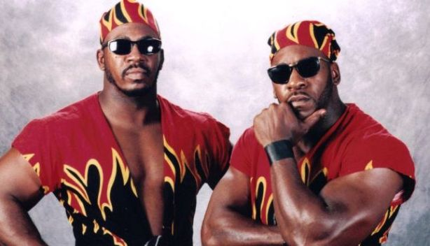

Книги
КнигиГлава 2. Чикагская неудача
Перевод для VSplanet.net
Каким бы подозрительным относительно наших сюжетов я ни был, пути назад не было. Как можно было отказываться — пусть даже от кандалов и тюремной одежды, — если мы наконец-то занимались делом на профессиональной основе!? Но наш дебют в студии WCW в Атланте, где проводились все ТВ-записи, был сплошным провалом.
Итак, когда мы в первый раз надели наши робы и цепи, в раздевалке воцарилась тишина. Стив Регал, Том Зенк, Брайан Пиллман, Большой Джош, Маркус Багвелл смотрели на нас с удивлением. Но они понимали, что мы сделаем все, что нам скажут, как бы странно это ни выглядело. Думаю, еще они были рады, что эти костюмы не заставляют надевать их! Но в то же время без сомнений они не могли дождаться момента, когда мы выйдем на ринг и эту креативную бомбу разорвет.
В общем, вы мышли в зал. Взгляды, которые на нас устремились, сложно описать. А ведь в зале были и чернокожие зрители! Кто-то даже узнал в нас тот «Эбонитовый экспресс», поскольку все же мы полтора года участвовали в ТВ-шоу, которое транслировалось по ESPN. Но мне сложно представить уровень разочарования зрителей, которые увидели, насколько более унизительным стал наш гиммик. Мы были энергичными героями в Далласе, выступая на национальном телевидении, а теперь превратились в беглых рабов, вот только-только с хлопковых плантаций. Нас не спас даже одетый с иголочки Полковник Паркер в белом костюме и с черной бабочкой в стиле Полковника Сандерса.
Грег Ганье дал нам ценнейшие указания по поводу нашего матча против каких-то джобберов: «Выйдите и выбейте из них всю дурь.»
Мы сделали в точности то, что требовал Грег. Мы вышли и отработали настолько жестко, насколько эт возможно. И с каждым ударом, с каждым броском мы чувствовали, как напряжение в зале возрастает. В рестлинге очень важно уметь вызывать отрицательную реакцию. Зрители готовы заплатить хорошие деньги, чтобы их любимчики надрали зад ненавистным злодеям.
Тем не менее есть хорошая негативная реакция, а есть плохая. В тот день была плохая. Они были против нас не потому, что мы работали как отрицательные персонажи. Они были против нас, потому что наши персонажи сами по себе были чересчур вызывающими. Матч был коротким, однако из-за реакции фанатов казалось, что он длился вечность. Когда все было кончено, я понял, что ринг забрасывают мусором и попкорном.
Я огляделся и только тогда услышал оглушительный гул. Нас ненавидели. Нас ненавидели в первом же матче в WCW.
Но наши проблемы только начинались.
Общественная реакция на наш дебют последовала моментально. В СМИ было полно отрицательных откликов. Все сходились во мнении, что WCW облажались. И совсем скоро мы снова оказались в офисе с Оле и Сидом. Оле сказал, что лавочку сворачивают. Наш матч не пустят в телеэфир, потому что ему и так выносили мозг со всех сторон. Он рассказал, что общее настроение было таково, что нас надо было уволить и отправить по домам.
Я запаниковал.
Но Оле продолжил, сказав, что Сид нас очень хорошо отрекомендовал, да и Ганье дал хороший отзыв. Поэтому даже с учетом нашего неудачного дебюта у него готов новый план.
Мы снова оказались на совещании креативщиков. На этот раз Дасти сразу же спросил, какие мысли относительно будущего есть у нас самих.
Что говорить, мысли у нас были. С самого раннего детства мы очень любили фильмы, эксплуатировавшие темы чернокожих. Такие как «Шафт» (Shaft) и «Крутой» (Super Fly). Я предложил, что нам стоит быть не пойманными беглыми рабами, а парочкой крутых парней из Гарлема.
Не успел я это сказать, как Дасти уже указывал на нас пальцем и вопил: «Да! Это то, что нужно! Пекло Гарлема. Мне нравится!! Головорезы с 110й улицы!»
Мы с Лэшем посмеялись, а я вспомнил сво любимую фразочку Шафта: «Can you dig it, sucka?» Я запомнил эти слова с раннего детства.
Дасти начал аплодировать, всем идея очень понравилась. Мы также предложили свои старые Далласские имена — Букер Т и Стиви Рэй, однако на это нам сказали «нет». Нас это опечалило, поскольку мы никак не могли разобраться, кто из нас Коул, а кто — Кейн. Но по крайней мере, нам разрешили переделать образ!
А я уже рисовал себе, как будут выглядеть наши новые персонажи. Я прошелся по магазинам и очень скоро заприметил хорошие варианты для нашей формы. Мне приглянулись черные рубашки с огненными всполохами от воротника и вниз по рукавам и на груди. Самое забавное было в том, что на рубашках был логотип дуэта Брукс и Данн. Ни что так хорошо не описывает двух громил-негров из Гарлема как одежда исполнителей кантри-рока!?
А затем все было просто. Я оборвал с рубашек рукава а то, что осталось мы не застегивали, а завязывали на поясе. Остальное было просто: пара черных борцовок, черные штаны, на которых я также нанес рисунк пламени, ну и дешевые солнцезащитные очки, чтоб дополнить образ. На все про всё ушло меньше 60 долларов с каждого. Чуть позже я взял пример с футболистов НФЛ и добавил к образу еще нашлепки на нос для улучшения дыхания.

Дасти также разрешил нам выбрать музыкальную тему из каталога WCW, в котором были композиции, на которые у промоушна были оформлены авторские права. Мы долго сидели и слушали генеричные треки, но ничто не запоминлось. Но внезапно одна из них привлекла мое внимание. Ритмичное начало, словно бы скачущие звуки, они становились все выше, затем появлялась мелодия, немного эффектов. Мне понравилось, мы сошлись на том, что это нам идеально подойдет. Никогда бы не подумал, что с этой темой я останусь до конца своей карьеры!
Ну что, настало время поработать над формой. Я был около 185 сантиметров роста и весил чуть больше 100 килограммов. Лэш был настоящим монстром — под 2 метра рост и около 130 килограммов веса. Мы не были зациклены на качалке, но мы правильно питались, регулярно занимались и не были завсегдатаями вечеринок. Мы были готовы к новому дебюту и с физической, и психологической, и креативной точек зрения.
Но учитывая наш неудачный дебют, Оле решил попридержать нас вне ТВ-шоу, чтоб публика о нас чуть забыла. Кроме того это время мы могли потратить на работу над персонажами. Мы очень хотели обратно на шоу, но мы понимали, что это правильный подход. Так что в июне 1993 года мы отправились в наш первый 3-недельный тур WCW по всем большим и маленьким городам. Лэш был за рулем и мне оставалось лишь разглядывать окрестности американской глубинки от Монтгомери до Чаттануги.
Одно из наших шоу прошло в крохотном городке Уайт, Джорджия. Население — небоьше 700 человек, при этом на 100% белое! Перед шоу мы остановились перекусить в местной кафешке, которая выглядела как помесь типичной забегаловки 50х и Arnold’s из сериала Happy Days.
Я привык быть единственным черным посреди множества белых, но когда мы зашли в дверь, это меня поразило. Все отложили еду и уставились на нас. Стояла мертвая тишина. Я словно бы слышал, как все думают: «Что эти парни тут забыли? Тут им явно не место.»
Мы поняли, что заведение лучше покинуть. Но есть очень хотелось, поэтому мы все же заказали бургеры. При этом мы в один голос, не сговариваясь попросили сделать нам заказ на вынос.
Во время первого тура я в первый и последний раз стал поводом для подшучиваний — типичных в отношении новичков. Даже не помню, где это было, но мне чертовски хотелось есть. Тогда каждый оплачивал все сам, что могло серьезно ударить по кошельку. У нас был матч с 2 Колд Скорпио и Маркусом Александром Багвеллом, поэтому я попросил кого-то купить мне пару хот-догов и колу.
И вот мы обсуждаем матч со Скорпио и есть хочется уже просто невыносимо. У меня от этого заболела голова. Я решил пройтись по арене и вскоре увидел парня, которого отправил за едой. Он сказал, что отнес все в раздевалку, а рестлеры сказали, что я могу все оставить. После этого он ушел. Я бросился в раздевалку, но там уже ничего не было. Я понял, что остался и без еды, и без денег. Никогда такого не происходило, поэтому я разозлился. Громко и отчетливо я предупредил всех, что если мне не вернут мой обед, кому-то не поздоровится.
Внезапно заиграла музыка Криса Бенуа, который после того вернулся со своего матча. И я был готов поспорить, что увидел у него возле рта остатки горчицы.
— Это ты съел мои хот-доги?
Он быстро посмотрел на меня, ответил отрицательно и прошел мимо.
Я взбеленился: «Вы меня не знаете! Я вам всем покажу, каково это — брать мои вещи! Как только этот Бенуа вернется, я врежу ему по физиономии».
Макс Пэйн сказал, чтоб я успокоился, ведь это всего пара сосисок!
А я расхаживал взад и вперед, предвкушая, как пощупаю Бенуа лицо. Но когда я вернулся к своей скамейке, там были и хот-доги, и кола, и даже сдача.
Деньги я забрал, но к еде даже не прикоснулся. Я был так разозлен, что даже забыл о голоде.
Да, надо мной подшутили, и подшутили неплохо, однако у меня не было настроения, чтобы смеяться.
На следующий день, когда я зашел в раздевалку, меня ожидали упаковка сосисок и пакет с булочками. Вот тут я рассмеялся.
Я так и не узнал, кто это сделал, а Бенуа так и не узнал, как близко он был от того, чтобы получить от меня по физиономии.
В те дни мы могли работать перед аудиторией и в 500, и в 5000 человек. Для нас с Лэшем не было никакой разницы, мы всегда выкладывались по полной. Мы были новичками в WCW, но не были новичками в командном рестлинге! Полтора года мы обучались в Спортаториуме в Далласе, так что мы знали, что и как делается, и могли это продемонстрировать в любое время в любом месте. Там мы придумали несколько специальных командных приемов. Кроме того у нас был стиль, навеянный фильмами Брюса Ли, от которых мы просто тащились в детстве. Очень часто после таких совместных просмотров мы отправлялись во двор, где демонстрировали друзьям все, что увидели. Мы пытались добавить немного детских увлечений в наши выступления. Выяснилось, что это не просто забавно, но и зрелищно! Именно поэтому нас пригласил Сид: он знал, на что мы способны!
За пару месяцев до нашей поездки в Атланту Сид увидел нас на ТВ-шоу ESPN и решил заглянуть в Спортаториум. Он пришел с другом, Джонни Роттеном. Сид нашел нас за кулисами, после чего предложил матч. Как можно было отказаться?
Это было благотворительное шоу 2 апреля 1993 года
Когда заиграла музыка Сида, зал сошел с ума! Его знали все, его выступления смотрели по телевизору и он приехал для того, чтобы посмотреть, на что способен Эбонитовый экспресс! Он привычно перешагнул через третий канат, после чего мы провели самый содержательный матч в нашей карьере!
Мы с Лэшем выложились по полной! Мы прыгали, летали и по полной отыгрывали удары Сида. И Сид делал для нас то же самое! У нас возникла потрясающая «химия», о чем говорить, он даже позволил нам победить! На нашей родной территории! Зрители, собравшиеся в Спортаториуме, болевшие изо всех сил за своих родных парней, смотревшие матч ни на секунду не присев, взорвались радостными криками, а шоу покидали абсолютно счастливыми. Это было такое зрелище, которое делает рестлинг таким замечательным.
Когда Сид подошел к нам за кулисами, он широко улыбался. Он сказал, что весьма впечатлён, и что у нас есть все шансы на то, чтобы закрепиться и в больших лигах. Он пообещал сделать для нас все возможное.
Мы пожали друг другу руки и разъехались. Но мы с Лэшем не могли поверить, что только что провели матч против одного из самых известных рестлеров тогдашних дней.
Я знал, что после того дня Сид постоянно раздумывал о том, что для нас можно сделать.
Именно поэтому мы получили персональное приглашение от Сида. Именно поэтому нам дали второй шанс после полностью проваленного дебюта: Сид верил в нас. Если бы мы сразу дебютировали как безумная сила Гарлема, а не брошены на ринг в виде чикагских зэков, все бы закрутилось на несколько недель раньше. Но я не был расстроен: у нас была возможность вернуть себе инициативу. Мы были в большем мире, чем привыкли. И мы только начинали по-настоящему учиться.
Нам невероятно повезло, что помогал нам не только Сид, но и несколько потрясающих агентов, которые могли дать самый точный и полезный совет. Одним из них был Гризли Смит, бывший известный рестлер, отец Джейка Робертса. Как только мы приезжали на шоу, мы сразу направлялись к Гризли и слушали все, что он нам скажет. Он был абсолютным альтруистом и наилучшим ментором, на которого мы только могли рассчитывать.
Гризли поначалу ставил нас в матчи с молодыми рестлерами — 2 Колд Скорпио, Ван Хаммер, Брэд Армстронг, Багвелл, Макс Пэйн. У них был разный уровень подготовки, на ринге они демонстрировали разные приемы. Из всех них самым интересным был Скорпио. Он был подвижным, атлетичным, любил экспериментировать на ринге — особенно в плане приемов с канатов. Он весил около сотни килограммов, но ростом был на пол-головы ниже меня, но я многому у него учился. Он очень любил провести прыжок назад с канатов и приземлиться легдропом. При этом он всегда попадал! Я пытался повторить этот прием, но делал более безопасный прыжок — сальто вперед. Тем не менее, я к тому моменту еще не был готов его демонстрировать на шоу. Вообще я никогда не проводил на ринге прием, пока не учился проводить его удачно каждый раз. Скорпио был моим ровесником, мы хорошо общались и стали настоящими друзьями — такое редко бывает.
А на другом конце шкалы был Ван Хаммер. Он был на два года младше и выглядел уменьшенной копией Сида. Его рост заявляли как 195, он был предельно накачан, с длинными светлыми волосами. Но на ринге он не мог ничего. Проводить матч с Хаммером было настоящей пыткой, потому что он не умел даже нормально следовать в матче за тобой! Выходя на ринг, он даже забывал то, о чем договаривались до матча. Его удары были невыверенными и порой приходились в полную силу. Он был слишком неопытным, а в пылу боя совсем терялся. Тем не менее, он был адекватным парнем, и мы с ним тоже неплохо поладили.
Выступать в таком разнообразном ростере было настоящим удовольствием. Мы с Лэшем старались изо всех сил, чтобы заработать хорошую репутацию.
Но как только в конце тура мы посчитали, что нам удалось обрести себя, приключилась очередная неприятность.
Мы направлялись в Гранд Рапидс или Сент-Луис, выступая по дороге в каждом даже самом безвестном городе Индианы, Огайо, Кентукки и Западной Виргинии. Поездка была изматывающей, но мы были к этому готовы. В конце концов, на тот момент мы были всего лишь парнями, которые занимались тем, о чем всего парой лет раньше даже и подумать не могли. Это было феноменально. И это была наша путевка в будущее. Мы понимали, что если научимся справляться с этими турами, то мэйн-ивент от нас никуда не денетс.
Да, мы проигрывали по четыре матча из пяти, однако такова судьба новичков. Мы отрабатывали выданные нам авансы, нам было важно показать себя наилучшим образом — неважно, побеждал ты или проигрывал. Каждый матч был возможностью продемонстрировать свой атлетизм, отработать что-то и улучшить персонаж. Зрители придут на наш следующий матч, лишь если нам удастся запомниться! И мы показывали этим работягам, которые заплатили за билет, покупали футболки дл себя и их семей, что-то новое, непохожее, то, что они могли потом расказать своим друзьям! Их деньги были нашим заработком, поэтому это было то, что важно.
Реакция зрителей была лакмусовой бумажкой нашего успеха. Я всегда следил за этим, каждый раз, когда выходил на ринг.
Мы не знали, как долго нас продержат вне ТВ-записей. А в конце июня Сид решил, что будет выступать с нами в матчах 3х3! Он сказал, что планирует вернуть нас на ТВ-шоу, но перед этим проверить нас в деле лично. Тогда мы поняли, что у нас может быть большое будущее: Сид планировал показать, что мы — его новые помощники, и в матчах мы будем объединять свои усилия!
Было невероятно выступать с ним против Скорпио, Хаммера и Багвелла. Пекло Гарлема и Сид это было уникальным сочетанием, которое ранее никто не видел. Нам удавалось делать очень симпатичные шоу. Сид никогда не тянул одеяло на себя, он позволял нам проводить командные приемы Хаммеру и работать со зрителями — будто настоящим звездам! Его взаимодействие с аудиторией — простыми мимикой и жестами — возносило нас всех в гиперкосмос не меньше, чем наши фирменные приемы Багвеллу, приносившие нам победы. Сид помог нам стать еще больше!
Наконец, пришла пора вернуться на записи.
К тому моменту исполнительным продюсером шоу стал Эрик Бишофф, ранее работавший комментатором и интервьюером.
Эрик в 1993м году пытался вывести WCW на уровень противостояния с WWF, поэтому он сразу договорился о записях со студией Disney-MGM в Орландо. Эрик считал, что перенос шоу из Атланты в Диснейленд, раздача бесплатных билетов посетителям парка означало хороший вклад в популяризацию компании.
Был длинный транзитный период, пока мы записывали шоу и в Орландо, и в Атланте. Для меня разницы не было никакой — разве что во Флориде была прекрасная погода. Я ненавидел выступать в северных городах, особенно во время зим. В эти холодные месяцы было как никогда к месту приехать в Орландо, где зависнуть на время записей на несколько дней, наслаждаясь постоянным солнцем.
Первые записи в Орландо прошли 7 июля: нас ожидал очередной матч 3х3. Также 9 июля мы должны были провести базовый матч против джобберов, которых звали Скотт Аллен и Алекс Гибсон.
Дебют Пекла Гарлема снова отложили на пару недель, но мы знали, что время настало. Записи начанались с подъема и завтрака в восемь утра. Мы записывали несколько шоу в день в первой половине дня. Тогда ни у WCW, ни у WWF не было прямых эфиров. Все, что вы видели на ТВ, записывалось. И иногда было записано за несколько месяцев до премьерного показа.
В первый день в Диснее Эрик попробовал еще одну свою новинку. Он предложил медленно вращать ринг вокруг своей оси. Находясь на ринге это было практически незаметно, однако со стороны это выглядело очень странно. Вскоре от идеи отказались, но Эрик продолжал искать новые способы заинтересовать зрителей.
До конца июля мы с Лэшем выступали на югах как Пекло Гарлема. Нам нравилась работа, нам нравилось то, что мы видим вокруг. Во время выступлений мы обсуждали наше будущее и в бытовом плане. В Атланте мы все еще проживали у Сида и пришли к выводу, что надо позаботиться и о своем доме, чтобы не злоупотреблять его гостеприимством. Лэш предпочел остаться в Хьюстоне, а я посчитал, что будет лучше переехать в Атланту, чтобы быть поближе к WCW.
Я решил покинуть родные края. Те, в которых я пытался выжить после смерти мамы. Те, в которых я принял столько неудачных решений. Те, которые привели меня в тюрьму. Те, где люди дали мне шанс наладить свою жизнь и встать на ноги. Настало время оставить это позади и закрыть за собой двеь. Но попав в мир новых возможностей, я ни на секунду не забывал о своих корнях.
Оглавление книги